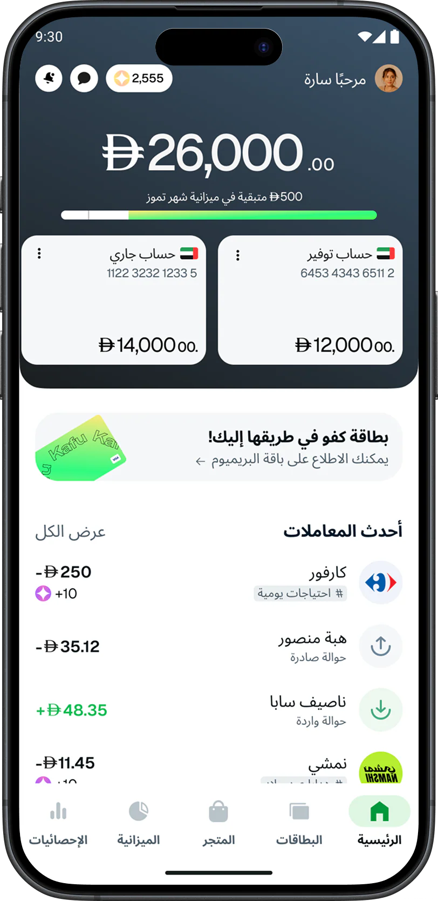

إدارة الميزانية في Kafu
مشروع شخصي يستكشف كيف يمكن لتطبيق مالي أن يعرض الميزانية الشهرية بطريقة تساعدك على التصرف قبل تجاوزها، لا بعد أن ينتهي المال.

من أين بدأ كل شيء
كثير من الموظفين الشباب في الإمارات ينتهي مالهم قبل موعد الراتب دون أن ينتبهوا. القهوة، وسيارات الأجرة، وطلبات الطعام، والاشتراكات المنسية تتراكم أسرع مما يتوقعون.
تطبيقات البنوك تجيد عرض ما أنفقته. لكنها أقل قدرة على عرض ما تبقى لك، وأنت ما زلت قادراً على التصرف.
تطبيق البنك يعرض المجموع، لكن بعد فوات الأوان.
ما الذي كنت أحاول حله
الهدف وضع إجابة واضحة ودائمة عن سؤال "كم يمكنني أن أنفق بعد؟" في واجهة التجربة، حيث تستطيع فعلاً تغيير السلوك، ودون إزعاج.
لماذا يخبرني التطبيق بعد أن أتجاوز ميزانيتي فقط؟
أين أنظر لأعرف أن وضعي ما زال جيداً؟
مؤشران يخبراننا بنجاح الفكرة
- نسبة الالتزام بالميزانية: المستخدمون الذين ينهون الشهر ضمن الحد الذي وضعوه
- عدد مرات مراجعة الميزانية: كم مرة يعود المستخدم إليها لأنه يثق بها
"التنبيه عند 80% مفيد. وأي تنبيه قبل ذلك أتجاهله."
فكرة تكررت في أحاديث المستخدمين
كيف تعاملت مع المشروع
بدأت بالناس. جمعت أقوال موظفين شباب، وصنفتها في خريطة تقارب، وتتبعت دورة المال خلال شهر كامل لأعرف أين يغيب الانتباه، وكل ذلك قبل تصميم أي شاشة.
الرحلة
-
الاستكشاف وخريطة التقارب
جمعت أقوالاً تمثل الموظفين الشباب وصنفتها في محاور.
-
خريطة رحلة العميل
رسمت دورة شهر عادي، من يوم الراتب إلى نهاية الشهر، لأجد نقاط التعثر واللحظات المناسبة للتدخل.
-
قصص المستخدم
حولت المحاور والرحلة إلى 5 قصص مستخدم حددت نطاق النسخة الأولى من المنتج (MVP).
-
تحليل المنافسين
درست طريقة تطبيقي N26 وRevolut في إدارة الميزانية على iOS لأجد الفجوة التي تستحق أن نملأها.
-
التصميم والرحلة
صممت رحلة الميزانية كاملة، من تحديد المبلغ الشهري إلى متابعة الشهر الجاري.
-
العربية / RTL
صممت نماذج لشاشات الميزانية بالاتجاه المعكوس لأتأكد من أن التخطيط يناسب نصف جمهور الإمارات.
ما الذي كشفه البحث
ظهرت 4 محاور من خريطة التقارب، وكل محور قاد مباشرة إلى قرار في التصميم.
- إنفاق دون انتباه: المدفوعات الصغيرة اللاتلامسية تحدث تلقائياً. الحل تصنيف يظهر الإنفاق، لا إدخال يدوي للبيانات
- لا صورة لحظية: حالة الميزانية تظهر دائماً، فيراها المستخدم دون أن يبحث عنها
- ارتباك في الفئات: التصنيف التلقائي الذكي يخفف عبء القرار، وإمكانية التعديل لاحقاً تبقي التحكم بيد المستخدم
- تفضيلات التنبيه: حدود قابلة للتعديل مع خيار التأجيل تحترم الطريقة التي يفضلها كل شخص في التنبيه
"التحليلات تنظر إلى الماضي: كم أنفقت؟ والميزانية تنظر إلى الأمام: كم يمكنني أن أنفق بعد؟ ميزة تستخدمها كل يوم تستحق مكانها في شريط التبويبات، لا صفحة فرعية على بعد ضغطتين."
أهم استنتاج من تحليل المنافسين
تصميم الحل
اختصرت النسخة الأولى في 4 قرارات، كل قرار مرتبط مباشرة بمحور من البحث، وفي رحلة تأخذ المستخدم من تحديد المبلغ الشهري، إلى تفضيلات التذكير وتوزيع المبلغ على الفئات، ثم إلى شاشة المتابعة المباشرة للشهر.
- أداة ميزانية دائمة: "المستخدم / الإجمالي" مع شريط تقدم يظهر فور فتح التطبيق
- تصنيف تلقائي ذكي: يقترح الفئة حسب التاجر والمبلغ، والمستخدم يؤكد أو يغير
- حدود تنبيه قابلة للتعديل: 80 / 90 / 100%، بأي تركيبة، مع خيار التأجيل
- تذكير شهري بالميزانية: شاشة واحدة تدعوك لتحديد ميزانيتك عند نزول الراتب


مصمم للعربية أيضاً
نصف سكان الإمارات يقرؤون بالعربية، لذلك لم يكن الاتجاه من اليمين إلى اليسار (RTL) إضافة متأخرة، بل اختباراً. أعدت بناء شاشات الميزانية بالاتجاه المعكوس لأتأكد من أن أداة الميزانية وشريط التقدم وقائمة الفئات تبقى واضحة بعد القلب.

ما الذي سآخذه معي
- المكان ميزة بحد ذاته: الأدوات اليومية تستحق مكاناً في الواجهة، لا صفحة فرعية على بعد ضغطتين
- تصميم التنبيهات ذوق لا علم: حين يختار المستخدم بنفسه، يتحول الإزعاج إلى ميزة يشعر بها
- دعم اللغات يكشف عيوب التصميم مبكراً: RTL اختبار حقيقي، لا إضافة متأخرة
نظرة إلى الوراء
ما بدأ فكرة بسيطة، "أرني ميزانيتي"، صار دراسة في التصميم الاستباقي: عرض الرقم المناسب في اللحظة المناسبة ليتصرف الناس والوقت ما زال في صالحهم.
أصعب جزء لم يكن أداة الميزانية. كان تحديد ما يستحق أن يظهر دون أن تبحث عنه.
تريد مناقشة التفاصيل؟
يسعدني أن أشرح لك البحث وقرارات التصميم وما لم يصل إلى النسخة النهائية.
تواصل معي